risorse | mbot in modalità rover
In preparazione di un nuovo RoboDojo mi sono chiesto se sia conveniente dedicare del tempo per mostrare come si programma mBot in modalità rover — Live nella terminologia di mBlock. La risposta breve è no, i potenziali problemi sono diversi, uno su tutti il fatto che mBlock richiede espressamente la presenza di una radio Bluetooth 4.x, mentre i più moderni computer supportano la versione 5.0. Alla pagina Connect Devices della documentazione ufficiale di mBlock si legge:
mBlock 5 supports two ways of connecting devices: (1) Through USB; and (2) Through Bluetooth 4.0 [...] Supported Bluetooth versions: Bluetooth 4.0, 4.1, and 4.2; Bluetooth 2.0 and 5.0 not supported.
Il problema affligge sia la versione desktop che l'estensione mLink2 per quella on-line.
Anche l'accoppiamento dei robot con l'editor richiede una certa perizia. Poiché tutti gli mBot condividono lo stesso identificativo Bluetooth “Makeblock” è di fatto impossibile per i partecipanti riconoscere il proprio mBot nell'elenco presente nella maschera di connessione. Nell'articolo Changing Bluetooth ID del forum ufficiale si trova questo suggerimento:
[...] turn off all the robots at first, then power on one robot and connect its bluetooth to a group, once this robot is connected, the blue light on the bluetooth module will be solid on and the other group cannot connect to it anymore. Then power on the second robot and connect to second group. So on and so forth.
Peccato, perché sarebbe stato interessante per i ragazzi sperimentare per esempio quanto complicato sia mantenere mBot sulla linea pilotandolo alla cieca — e di conseguenza quanto efficace si riveli essere il programma dell'inseguitore di linea. Si sarebbe potuto introdurre un ritardo tra l'invio del comando e la sua esecuzione per simulare una distanza interplanetaria così da vestire i panni di un tecnico NASA alle prese con un rover marziano: se l'invio di un messaggio verso Marte impiega da 3 a 22 minuti per raggiungere la sua destinazione in funzione di dove si trova rispetto alla Terra, anche una latenza di pochi secondi è sufficiente per rendere l'esperienza piuttosto frustrante!
Resta la possibilità di suggerire ai partecipanti di sviluppare questo progetto in autonomia. Per questa ragione ho deciso di presentare una possibile implementazione.
In modalità Live l'interazione tra mBot e gli altri sprite del progetto avviene per mezzo di messaggi e variabili globali, dato che i messaggi in mBlock così come in Scratch non possono trasportare dati. Questo progetto non fa eccezione.
Mi sono liberamente ispirato al tutorial mBot tutorial 4 – rover di David Leoni del CoderDojo di Trento. Questo è come appare lo stage del progetto Rover:
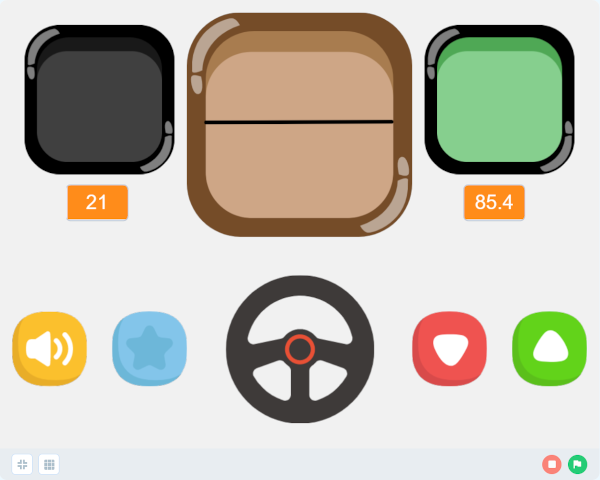Il pannello di controllo del rover.
In alto si trovano gli indicatori dello stato dei sensori, in basso i controlli per gli attuatori.
Light sensor, l'indicatore in alto a sinistra, rappresenta l'intensità luminosa che incide sul fotoresistore; restituisce il livello di luminosità nelle gradazioni buio, penombra, normale, piena luce:
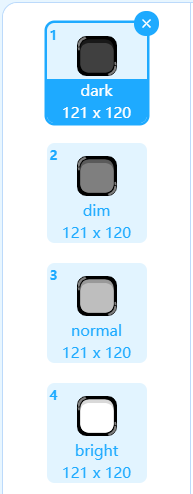I livelli utilizzati dall'indicatore di luminosità.
Il livello di luminosità, fornito da mBot attraverso la variabile globale light intensity e mostrato sotto l'indicatore, è un intero compreso nell'intervallo 0÷1023. L'indice del costume corrispondente si ottiene dividendo la misura per 4 e aggiungendo 1:
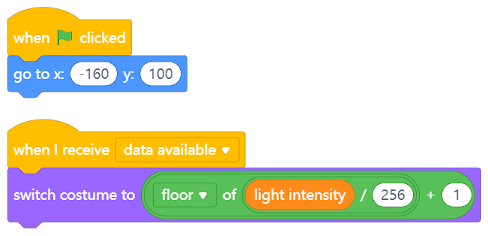Il codice associato allo sprite dell'indicatore di luminosità.
Line follower, l'indicatore più grande al centro, fornisce un'indicazione di massima circa la posizione di mBot rispetto alla pista. Lo stato del sensore di linea è ricavato dalla variabile globale line follower value.
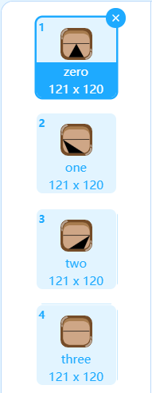I costumi predisposti per l'indicatore del sensore di linea.
La sequenza dei costumi corrisponde a quella dei valori emessi dal sensore di linea:
Grazie a questa accortezza il codice dell'indicatore diventa banale:
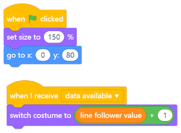Il codice associato allo sprite dell'indicatore del sensore di linea.
Radar, l'indicatore in alto a destra, indica la presenza di eventuali ostacoli secondo tre livelli di attenzione: verde per “strada libera”, giallo per “ostacolo in lontananza”, rosso per “ostacolo nelle vicinanze”.
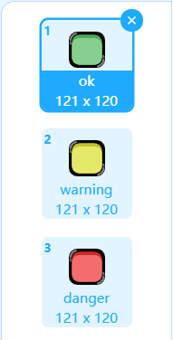I tre livelli utilizzati dal radar.
La distanza dall'oggetto più vicino determinata dal sensore ultrasonico, espressa in centimetri, è contenuta nella variabile locale distance ed è visibile al di sotto dell'indicatore. Questo rimane verde fin tanto che non vengono individuati ostacoli nel raggio di 50 cm. Diventa giallo se questa soglia viene superata, e cambia in rosso nel momento in cui la distanza si riduce a 20 cm o meno.
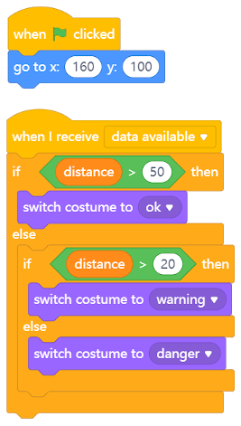Il codice associato allo sprite del radar.
Beep è il primo pulsante a sinistra; quando premuto causa l'emissione di un breve suono su mBot. La richiesta è inviata al dispositivo per mezzo di un messaggio dedicato:
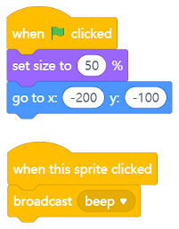Il codice associato al clacson.
Lights è un pulsante bistabile che controlla l'accensione dei LED. Ha due costumi:
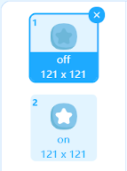I due costumi del pulsante di controllo delle luci.
Attenzione: per la vicinanza del fotoresistore ai LED, quando questi vengono accesi la luce emessa investe anche il sensore, e di conseguenza la lettura dell'intensità luminosa viene fortemente falsata!
Anche in questo caso il comando è inviato a mezzo di un messaggio dedicato:
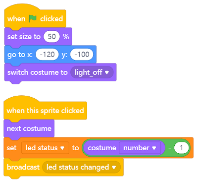Il codice associato al pulsante del controllo luci.
Steering wheel è il volante al centro del pannello ed è controllato con i tasti cursore destra/sinistra. Determina la direzione in cui si muoverà mBot quando si comanderà l'avanzamento o la retromarcia con i pulsanti di destra. L'angolazione è vincolata nell'intervallo 0÷180° ed è posta nella variabile globale direction:
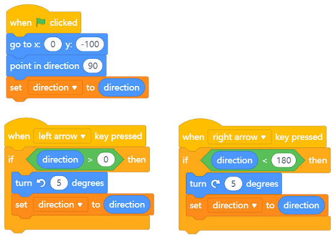Il codice associato al volante.
Forward fa muovere brevemente mBot in avanti. L'avanzamento può essere comandato anche da tastiera con il tasto cursore freccia su oppure con la barra spaziatrice:
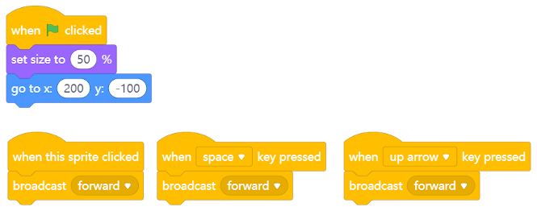Il codice associato al pulsante di avanzamento.
Back fa compiere a mBot una breve retromarcia. Si può usare anche tasto cursore freccia giù:
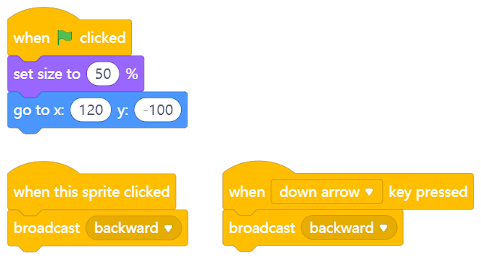Il codice associato al pulsante per la retromarcia.
Il dispositivo mBot ha tre scopi principali: assicurarsi che all'inizio il robot sia fermo e a luci spente, avviare il ciclo di acquisizione dei dati dei sensori, reagire ai comandi impartiti dall'operatore.
Il ciclo di acquisizione del livello di luminosità, della distanza registrata dal sensore ultrasonico e dello stato del sensore di linea avviene 4 volte al secondo; come già accennato, i dati raccolti sono resi disponibili agli sprite del progetto attraverso l'uso di tre variabili globali: light intensity, distance e line follower value. La notifica della disponibilità di nuovi dati aggiornati avviene emettendo il messaggio data available.
Il codice che si occupa della gestione dei comandi è di immediata comprensione. I comandi di marcia causano una breve accensione dei motori per consentire una certa precisione di manovra. Vale la pena citare l'uso della procedura calculate left/right speed che determina la giusta velocità da applicare ai due motori del robot in funzione della posizione del volante:
| Volante | Angolazione | Movimento | Velocità SX | Velocità DX |
|---|---|---|---|---|
| Tutto a sinistra | 0° | Rotazione antioraria | -100% | 100% |
| A sinistra | 45° | Curva a sinistra | 50% | 100% |
| Centrato | 90° | Rettilineo | 100% | 100% |
| A destra | 135° | Curva a destra | 100% | 50% |
| Tutto a destra | 180° | Rotazione oraria | -100% | -100% |
A partire dai dati riportati in tabella è relativamente facile determinare le espressioni per ricavare le velocità da applicare ai motori in funzione della posizione del volante:
vSX = min{1, (direction - 45) / 45} * vMAX
vDX = min{1, (135 - direction) / 45} * vMAX
Il valore di vMAX, contenuto nella variabile globale max speed, rappresenta il valore della velocità massima applicabile ai motori espressa come percentuale rispetto alla velocità massima caratteristica dei motori. Il valore proposto per vMAX è pari a 50.
Il tratteggio nei due grafici che seguono rappresenta l'effetto della funzione di minimo:
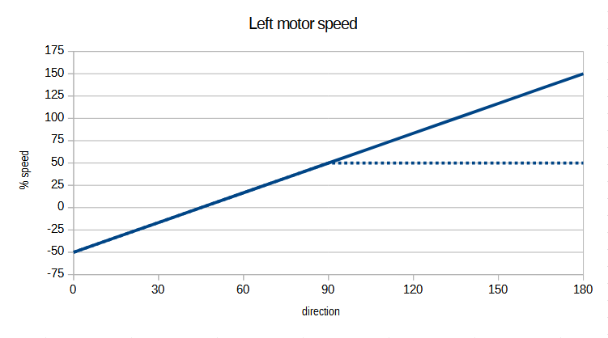Velocità del motore di sinistra rispetto alla direzione. La velocità è limitata a 50 se direction ≥ 90°.
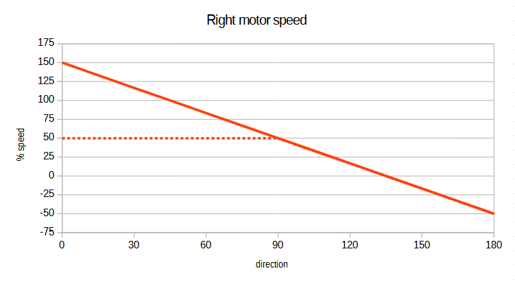Velocità del motore di destra rispetto alla direzione. La velocità è limitata a 50 se direction ≤ 90°.
Infine, il codice completo di mBot:
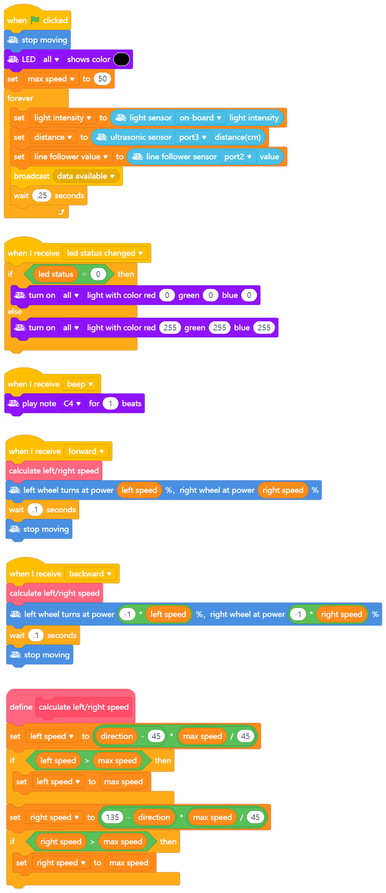Il codice di mBot.
Il progetto Rover per mBlock 5.3.0 è disponibile per il download qui.
Pagina modificata il 12/04/2021